Black rhinos are the rarest of all large African animals. In previous decades, they had a tough time. This was due to people's belief in the magical properties of their horns. Poachers have killed tens of thousands of rhinos, bringing the animals to the brink of extinction.
Today, their population is slowly recovering thanks to the efforts of animal rights activists. For 30 years now, a sanctuary in Mkomazi, Tanzania, has been breeding and protecting black rhinos. Recently, we became the guardians of a baby rhino named after our company – Angelino. Like other inhabitants of the sanctuary, she needs help to survive.
In this article, we will explore:
- The lifestyle and habitat of black rhinos in Tanzania
- How many black rhinos are left
- Who hunts for rhino horns and why
- How many rhinos are in Tanzania
- Mkomazi National Park's rhino sanctuary
- The inspiring story of Tony Fitzjohn, the sanctuary's founder
- Our visit to the adorable baby rhino, Angelino, with photographs.
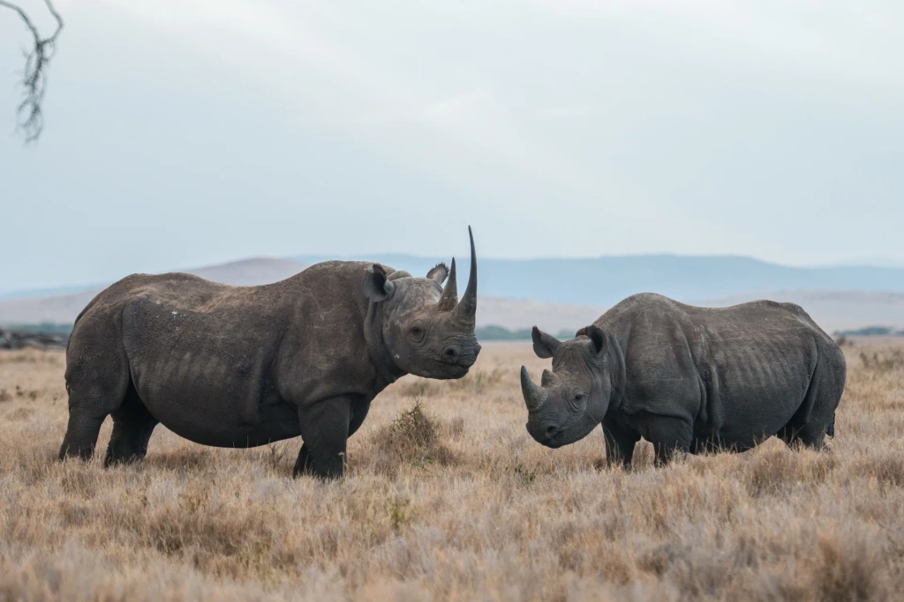
How Angelino Adventures supports wildlife protection
When we were contacted by the Mkomazi Black Rhino Sanctuary and offered to "adopt" a recently born rhino, we immediately agreed. Angelino Adventures already had experience helping animals. We participated in rescuing a lion named Simba, who was freed from a Russian basement and transported to Tanzania. We have helped numerous animals from the Kilimanjaro Animal C.R.E.W. rehabilitation center. Once, we even took care of a young antelope for a year—read about how the antelope Nyasi lived with Angelino Adventures.
There have been other projects related to helping animals and entire ecosystems. For example, restoring forests in the buffer zone of the Kilimanjaro forest and near the famous Chemka Hot Springs. Read about how Angelino Adventures embraces environmental and social responsibility.
How could we help the young rhino? Its maintenance requires a lot of money. Many rangers work in the sanctuary – they need salaries and a lot of fuel for patrolling. Currently, more than 40 critically endangered black rhinos live there, for which fenced and guarded zones are allocated to protect the animals from poachers. There is a lot of work in the rhino conservation sanctuary. This is one of the in Tanzania where black rhinos are specifically bred. The sanctuary is home to the largest of all black rhino populations in Tanzania.

Just recently, about 30 years ago, there were no rhinos in Mkomazi. In all of Tanzania, there were about 15 individuals left and this species was close to being declared extinct. The activities of poachers destroyed almost all the populations of these animals in the country. They still have not recovered from the blow inflicted by humans. Therefore, it is so important to protect each rhino.
Next, we'll share the story of our trip to Mkomazi, where we visited the local population of black rhinos, numbering about forty animals.
Our visit to Mkomazi Rhino Sanctuary
Our task was to find one among the forty rhinos. It is only a few months old, and stands out from the others, so it should be easy. But on the other hand, it is difficult to find a little rhino in the thickets. Moreover, black rhinos have a peculiarity—the babies spend all their time with their mothers, hiding behind their large bodies. Well, let's try to find the mother rhino named Zawadi, and maybe we'll get lucky with spotting her daughter.
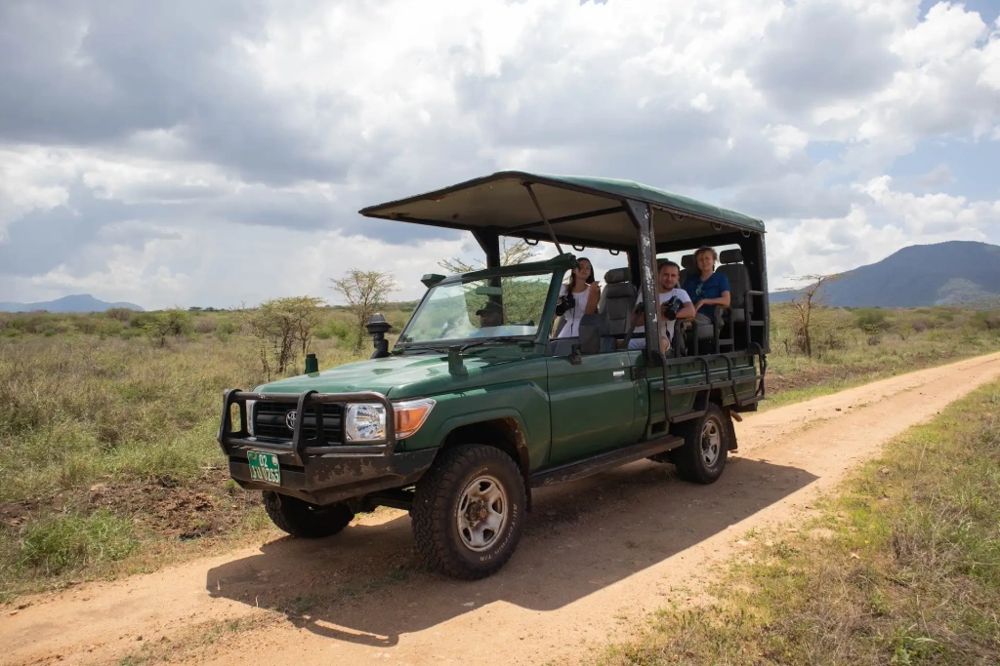
We entered the sanctuary, located deep in the national park. A long fence stretched beyond the horizon. A representative of the national park was in the car with us, coordinating the driver. We were told over the radio to go to gate number 6.
In the designated sector, several rangers were already waiting for us. Another group of rangers tracked down the mother and her 3-month-old daughter, so now we were directed straight to them. We drove closer to the forest and saw a large gray body. Aha, this is our rhino family! But we couldn't take a photo—the rhinos quickly disappeared into the thickets.
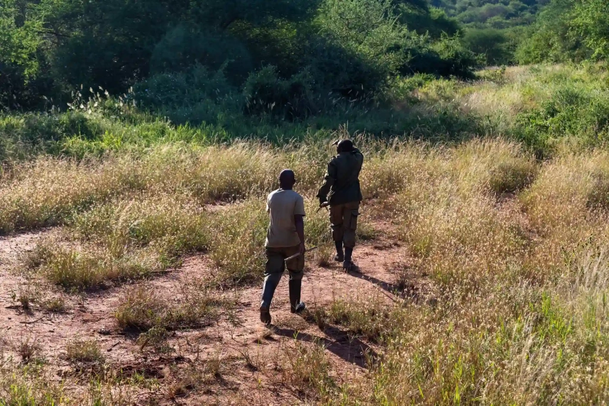
After half an hour of waiting while the rangers tracked down Zawadi with the baby again, we could drive to a new place. The situation was complicated by the fact that it was forbidden to get out of the car. We could only drive as close as possible and try to photograph the animals through the branches and grass. We didn't want to scare the baby rhino.
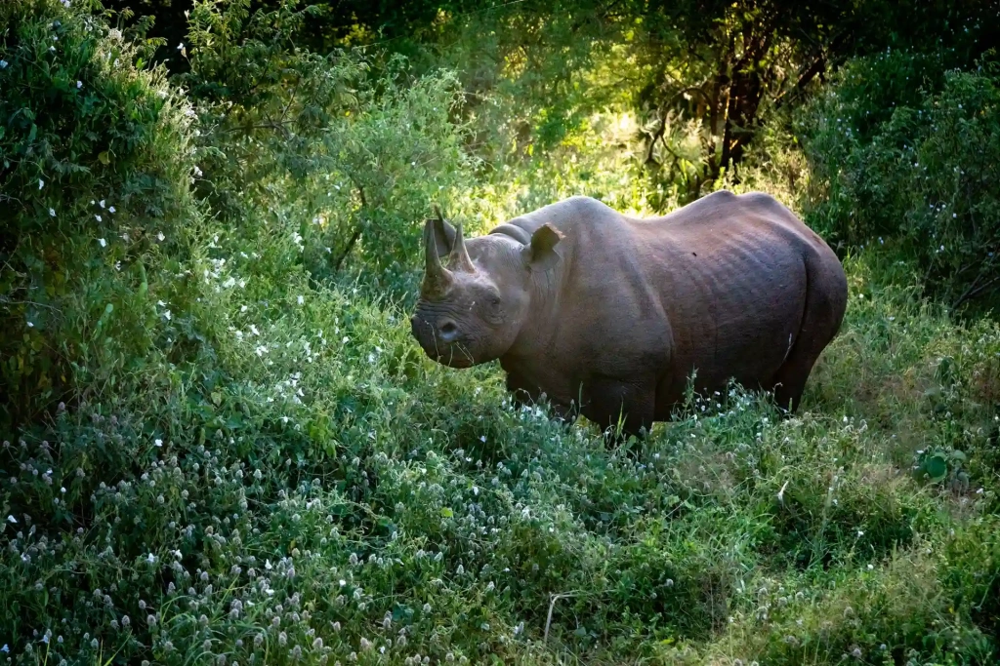
Ah, Zawadi went back into the depths of the forest. We spent half the day on the road, then a few more hours traveling through the park and talking with the administration. In an hour and a half, it would be dark. The chances of seeing our little rhino were diminishing.
The rangers were visibly losing interest. They often saw the young rhino and couldn't understand why we, who had traveled from afar, were so excited about getting a few photos. But then, one of the keepers waved his stick, pointing forward. It seemed we could drive along the road next to the fence. We moved forward just a little, and then, fortunately, between two bushes stood Zawadi, the mother rhino. She leisurely plucked vines from the bushes, chewing diligently, portion after portion. The camera shutter clicked away as our photographer, Sergey, worked tirelessly.
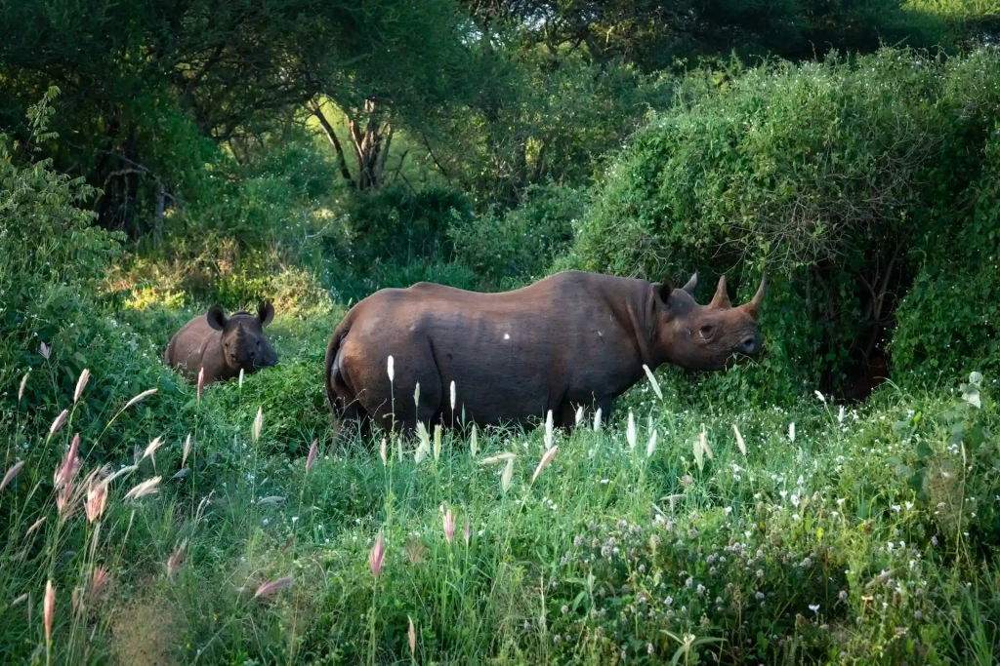
And suddenly, from behind the mother's back, the little one's face appeared. The shutter clicked more frequently. The baby rhino stepped out from behind her mother and looked at us with curiosity. The sunset sun illuminated both her and our faces. We smiled, took photos, and shot videos. The young Angelino came out to us. The task was accomplished—just before sunset, we found and photographed the little rhino that our company had taken under its care.
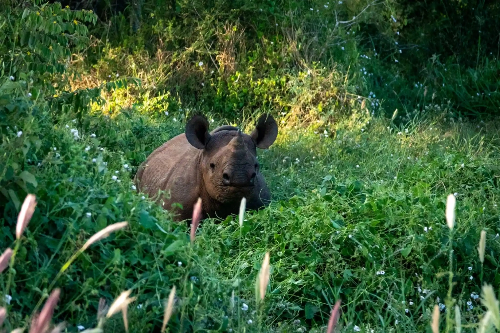
Rhinos and poachers
Next, let's address the most frequently asked questions about rhinos, their horns, the threat of poachers, and how these magnificent animals survive in Tanzania.
Why do poachers hunt rhinos?
Poachers hunt rhinos to cut off their horns and sell them. Of course, this is a black market, and parts of these animals can fetch huge sums of money. The average figure often cited online is $60,000 per kilogram (2.2 lbs) of rhino horn. Asian rhinos are more highly valued. One kilogram of the horn of one of the Asian rhino species can be valued at up to $400,000.
These prices can be compared to the price of gold. One kilogram of gold costs about $75,000. As we can see, in some cases, rhino horns are much more expensive.
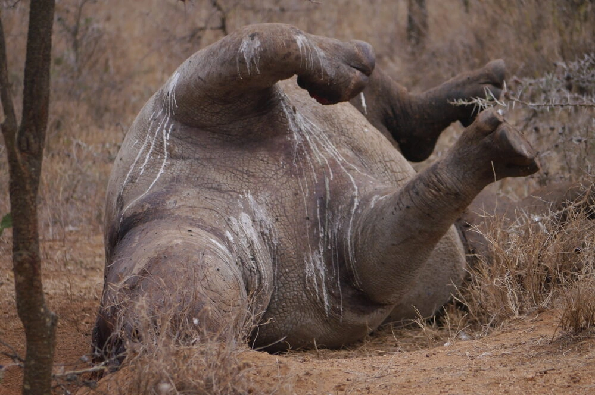
Alternative medicine and animal cruelty
The primary demand for rhino horns stems from their use in traditional Chinese medicine, a practice that includes various treatments such as acupuncture, herbal treatments, and cupping. While some of these practices like acupuncture have been studied for their therapeutic effects, many aspects of traditional medicine lack rigorous scientific support, particularly the use of rhino horns, which has no proven health benefits. In fact, rhino horns are made of a substance close to that of human fingernails. There is a crucial distinction between relatively benign treatments and those that contribute to conservation disasters such as the killing of critically endangered animals like rhinos.
Examples of animal-derived products used in alternative medicine include bear bile, deer antlers, seahorses, and pangolin scales. Bears are bred in some Asian countries, kept in cramped cages where they cannot stand, sit, or turn around. Catheters are inserted into their gallbladders to extract bile, which supposedly helps with conditions like hemorrhoids. many bears die from the effects of such surgical interventions, and the rest are killed at a young age.
Velvet deer antlers are cut off and ground into a powder, which is added to a medicinal soup. People eat it, believing that such a remedy helps "rejuvenate" their joints and bones. Seahorses are eaten by some men in Asia hoping to overcome impotence. Women use them to stimulate labor. Overfishing of seahorses has led to half of their species being classified as Vulnerable.
In Vietnam, it is believed that pangolin scales can dissolve blood clots and improve milk production in nursing mothers. Pangolins are considered the most trafficked animals in the world. All species of pangolins are on the brink of complete extinction.
Who buys rhino horns?
As for rhino horns, they are attributed with medicinal properties in fighting rheumatism, gout, fever, and many other diseases. The main buyers of "medicinal" products made from horn powder live in Vietnam. Quite a few are also in China. Again, there are no proven beneficial effects of rhino horns.

The media and the internet widely spread the version that in Asia, people
believe rhino horns are a powerful aphrodisiac, helping to combat impotence.
This is not true; Chinese folk medicine has never attributed such properties
to rhino parts. The myth was born from the incorrect assumption of a popular
Western author, . It seems
he was the first to write that men in Asia attribute aphrodisiac properties
to rhino horns. This misconception eventually became the main version. In
recent years, sellers of rhino horn powder have started attributing such a
property to their product, using the created myth for marketing
purposes.
Another group of buyers for these animal horns are those who
seek to display their status. Since the horns are sold for large sums of
money, purchasing them is a way to demonstrate wealth. Whole horns go into
private collections and are also used for making ornaments. For example, in
Yemen, it is customary to use rhino horn to make handles for curved blades
(daggers). Over time, the horn is polished and starts to shine, which only
increases the value of these items.
What species of rhinos exist, and why are their horns valued differently?
Currently, there are five species of rhinos on Earth—three Asian and two African:
- Sumatran rhino (Dicerorhinus sumatrensis)
- Indian rhino (Rhinoceros unicornis)
- Javan rhino (Rhinoceros sondaicus)
- White rhino (Ceratotherium simum)
- Black rhino a.k.a. hook-lipped rhinoceros (Diceros bicornis)
Sumatran rhinos are among the rarest. There are only 30 individuals left. They are the smallest of all rhinos. They have two horns: the front large one, 15–25 cm (5.9-9.8 inches) long, and the rear significantly smaller, often just a small protrusion. Sumatran rhinos are very agile. They can live in dense forests and easily climb steep mountains. Their habitat reaches up to 2500 meters (8200 feet) above sea level.
Indian rhinos are doing better than all other Asian species. Their population numbers about 2200 adults. They are the second-largest animal in Asia. The Mughal emperors organized spectacular entertainment—battles of elephants with Indian rhinos. The latter often won. They have only one horn, but it is large—20–61 cm (7.9-24 inches), and can weigh up to 3 kg (6.6 pounds). Interestingly, Indian rhinos often live near rivers and swamps and are excellent swimmers, diving underwater to feed.
Javan rhinos are the least numerous — barely a couple of dozen individuals. Today, the last representatives of this species live in only one national park on the island of Java in Indonesia. In the past, they inhabited large territories: Bangladesh, Myanmar, Laos, Vietnam, India, Thailand, Cambodia, and southern China. In fairness, representatives of this species were almost extinct by the time the first naturalists went to explore Southeast Asia. Javan rhinos have only one horn, usually less than 20 cm (7.9 inches) long. However, the British Museum in London has a specimen of record size—27 cm (10.6 inches).
White rhinos are the largest of all species and the least threatened with extinction. There are about 10,000 of them across Africa. Their main habitat is South Africa, as well as Namibia, Zimbabwe, and Mozambique. In fact, they are not white but slate-gray. They were likely called white due to a from one language to another. This species lives in open savannas, feeding on grass. They have two horns. The front one is larger: 94 to 200 cm (37-79 inches). The rear one is usually about 56 cm (22 inches).
Black rhinos are also inhabitants of the savannas in southern and eastern Africa. They were called black in contrast to white rhinos. However, the skin color of white and black rhino is actually the same. The African Rhino Specialist Group (AfRSG) of the IUCN's Species Survival Commission (SSC) estimated approximately 6,487 individuals across Africa with some slow growth. They are smaller than white rhinos and also have two horns, though smaller in size. The front one averages 50 cm (19.7 inches). Their primary range is the same as that of white rhinos.
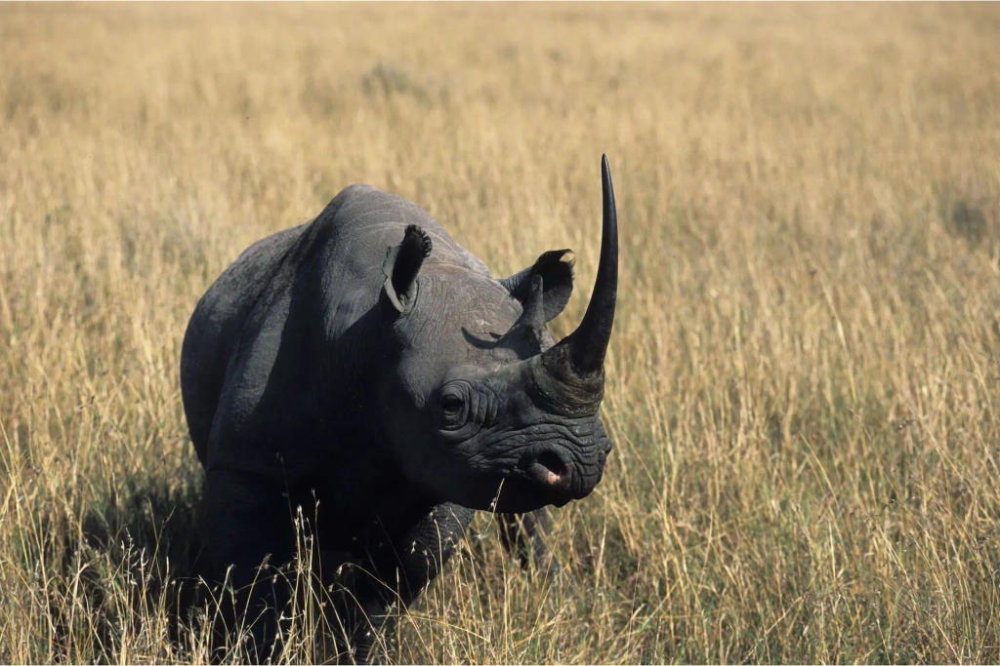
Our little one from Mkomazi is a representative of black rhinos. Let's tell you a bit more about them in a fact table.

The subspecies that lives in Mkomazi is called the Eastern black rhino (Diceros bicornis michaeli). It is distinguished by more grooved skin and a more curved horn that is also longer and leaner.
As you can see, the horns of different rhino species and even subspecies vary
in length. This affects their value. But even more, the origin of the rhino
influences their value—horns of Asian species are much more highly valued.
However, this does not save African species from poaching.
Poaching in Africa
By the early 19th century, hundreds of thousands of rhinos roamed Africa. Although they had been killed for their horns and thick skin for centuries, the scale of slaughter was not as threatening as it became in the tumultuous 20th century.
The situation worsened in the second half of the 19th century. At this time, East Africa became the world's main supplier of rhino horns. In less than 50 years, between 100,000 and 170,000 rhinos were killed. It was likely the black rhino that bore the brunt of the poaching boom. During this period, an average of about 11,000 kilograms (24,250 pounds) of rhino horns were exported annually from East African countries, including present-day Tanzania.
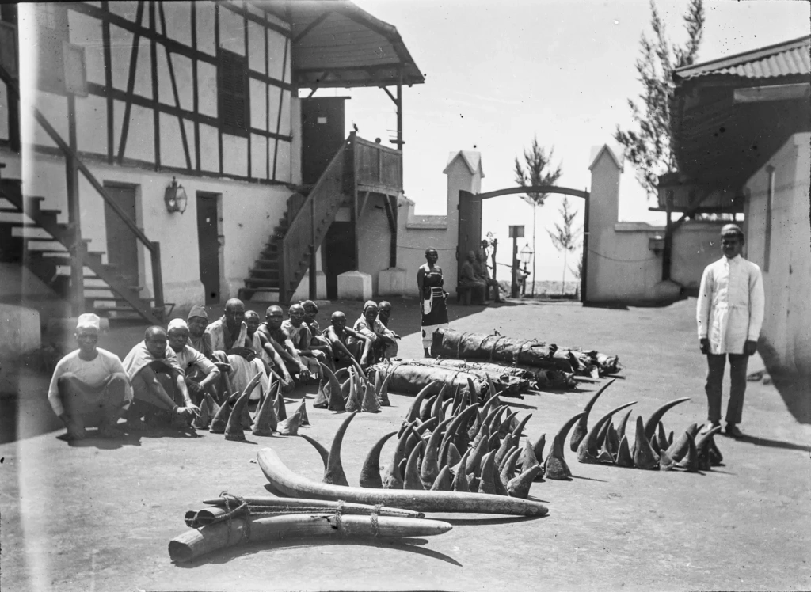
Throughout the 20th century, poaching gradually decreased. Between the 1930s
and the 1970s, between 174 and 1,180 rhinos were killed annually in East
Africa. The situation began to improve only in the late 1970s. First, an
international convention on preventing wildlife trade, , was
adopted, and then East African countries joined it. Good statistics are not
available for other African countries. It was only at the end of the last
century that they began collecting data for southern African
countries.
The fight against poaching has yielded results—rhinos were no
longer killed on such a large scale. Many countries in eastern and southern
Africa declared animal habitats as reserves and national parks. A new form
of tourism, photo safari,
began to gain mass popularity. But for some rhino populations, it was
already too late.
It appears that black rhinos took the biggest hit. This species is considered to have suffered the greatest pressure and the most significant decline in numbers among all terrestrial mammals in recent times. From 1970 to 1993, the total number of animals in black rhino populations decreased by 96%. Just imagine, in a relatively short period, 65,000 animals turned into 2,300.
If you look at today's statistics on the number of rhinos in different African countries, it becomes clear that the majority (68%) live in South Africa. This is also where the most pronounced poaching problem exists. Other countries with large populations are Namibia, Kenya, and Zimbabwe. Eleven other countries share the remaining 4% of African rhinos. Tanzania is among them. It can be said that Tanzania, like a few other countries, at some point lost almost all the rhinos that lived on its territory.

Rhinos in Tanzania
In the 1970s, about 10,000 rhinos lived in Tanzania. In the 1990s, this number reached a historic low—only 15 rhinos of both species could be found throughout the country. The main reasons for their near-extinction were poaching and habitat loss. The latter is another effect of human influence. People thoughtlessly destroy entire ecosystems: they use the wilderness for livestock grazing, cut down trees, and constantly expand agricultural activities.
Such a dire situation with one of the of the Big Five prompted the Tanzanian government to take urgent measures. One of the projects to bring rhinos back to Tanzania was the Mkomazi Sanctuary.
Mkomazi Rhino Sanctuary
Let's explore the story of the rhino sanctuary that has existed in Mkomazi National Park since the 1990s.
In 1951, two reserves were established in the area of the current Mkomazi National Park: Mkomazi and Umba. They shared a border with Kenya's Tsavo West National Park. Together, they form one of the largest ecosystems in Africa.
The word 'Mkomazi,' in the language of the local Pare people, comes from 'mko' (wooden spoon) and 'mazi' (water), implying water scarcity—just enough for one spoon. The lack of water remains the main problem in Mkomazi today.
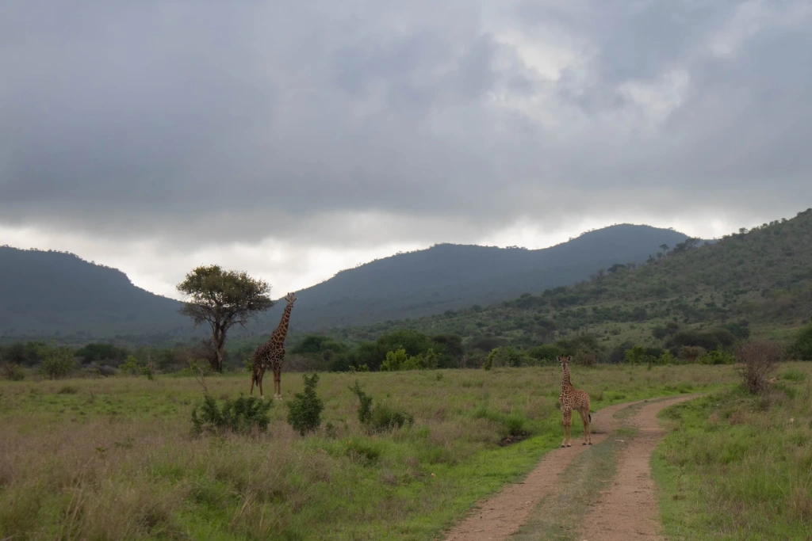
Until the late 1980s, many local people lived in the national park area. They engaged in livestock grazing, expanding pasture space and destroying the conservation zones. Nomadic Maasai, who always had many cattle, joined the local residents. This load led to the rapid degradation of the reserves. In the 1960s, about 200 black rhinos lived in Mkomazi; by 1985, none were left. Elephants and other animals also moved north to Kenya.
It was decided to evict all people from the game reserves and ban livestock grazing. In 1989, the Tanzanian government invited the George Adamson Wildlife Preservation Trust, which had been successful in neighboring Kenya. Tony Fitzjohn, who became the field director of ecosystem rehabilitation work in the combined Mkomazi-Umba reserve, came to Tanzania from the Trust.
George Adamson and Tony Fitzjohn
The Trust's founder, George Adamson, and his wife Joy were already renowned conservationists worldwide. They saved orphaned lions and other wild cats, nursed them, and released them into the savanna. Together with his wife, Adamson wrote several books about their life and work in Africa. The most famous novel, "Born Free," tells the story of the lioness Elsa, whom the couple taught to live independently. In 1966, a successful film of the same name was released, making the couple famous. Later, there were other films about George and Joy Adamson, including the well-known "Living Free" and "To Walk with Lions."
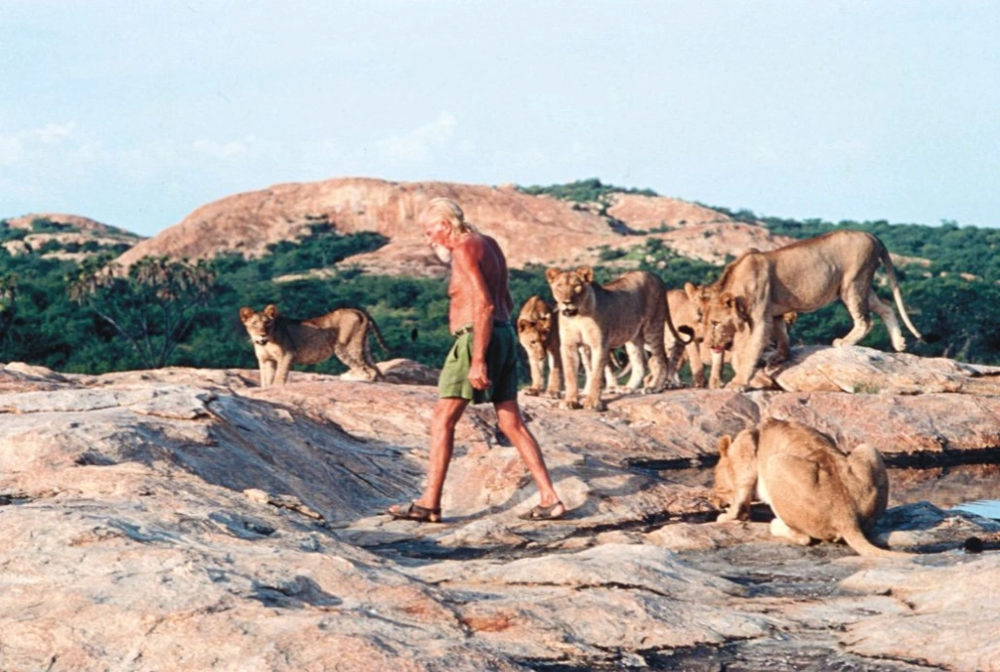
George Adamson, British by birth, spent his entire adult life in Kenya. He went from being a gold prospector and professional safari hunter to a conservationist, earning the title of . He spent the last 20 years in Kenya's Kora Reserve, caring for orphaned lions and leopards. Almost all this time, Tony Fitzjohn, another Briton who dedicated his life to working with wild African animals, was by his side as an assistant. Together, they saved 30 lions and 10 leopards, nurturing them and releasing them into the wild.
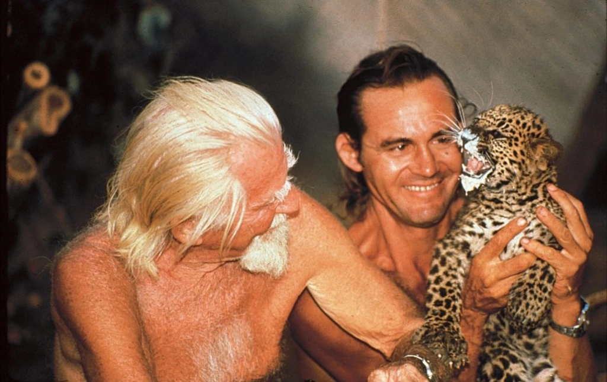
Today, Tony Fitzjohn is frequently recognized from photographs in which he is seen hugging lions. One of the lions George and Tony cared for left a permanent mark on Fitzjohn's life—he attacked him, biting his neck and leaving scars. This did not deter the wildlife enthusiast. After all, he had been reading stories about Tarzan since childhood and preparing himself for life in the wild, not imagining himself anywhere but in Africa and close to animals.
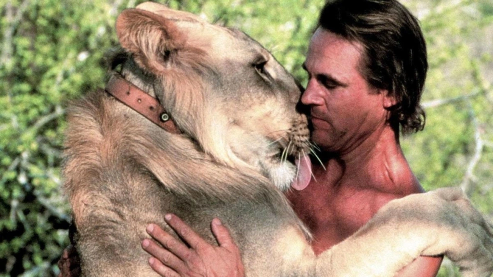
In 1989, George Adamson was killed by Somali bandits when he went to rescue a tourist and his assistant. George is credited with saving the tourist's life. He was 83 years old. Incidentally, his ex-wife Joy had also been murdered a few years earlier. Kora Game Reserve was given national park status. Tony Fitzjohn received an invitation from the Tanzanian government to revive the Mkomazi-Umba reserve, which had fallen into disrepair.
Rhinos and African Wild Dogs
The first few years of work in Mkomazi were spent on basic tasks: building roads and airstrips, constructing dams and water storage tanks, creating a base camp, and hiring personnel for patrolling. Two people, Hezekiah Mungure from the Wildlife Department and Tony Fitzjohn from the George Adamson Trust began all this and much more.
Fitzjohn managed to attract funds from private donors and various conservation funds from Africa, Europe, and America. Without fundraising, all the work in Mkomazi would have been impossible. In Tanzania at that time (and still now), well-known sites like Serengeti National Park and the Ngorongoro Conservation Area received sufficient funding. However, places like Mkomazi desperately needed both sponsors and a stream of visitors.
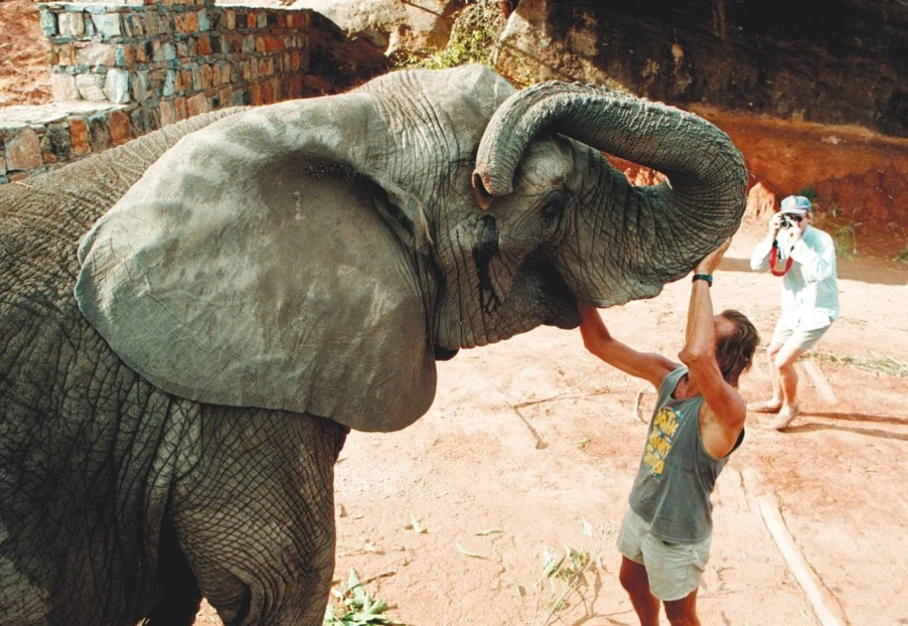
An essential part of the Mkomazi restoration project was the establishment of sanctuaries for black rhinos and African wild dogs (Lycaon pictus). By the early 1990s, these were two species of animals faring the worst in Tanzania. Even now, African wild dogs are classified as an endangered species, and black rhinos are critically endangered.
The first four black rhinos were brought to the sanctuary from a national park in South Africa. Later, 11 more rhinos were added, taken from European zoos, particularly from the Czech Republic and the United Kingdom. To accommodate the animals in Mkomazi, a protected area of 55 square kilometers (21.2 square miles) was prepared. Around the sanctuary is a multi-kilometer fence 2.5 meters (8.2 feet) high. It is electrified and always ready to alert rangers to any attempt to breach it.
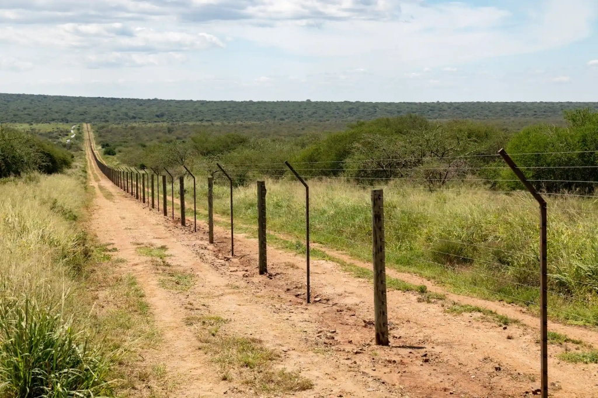
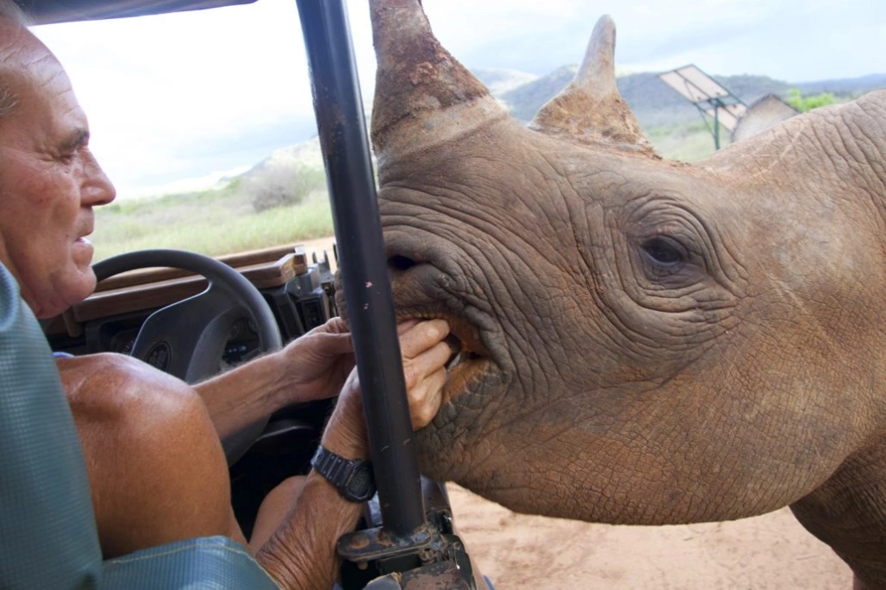
As one of the first rhino sanctuaries in Tanzania, this refuge became world-renowned as a successful animal reintroduction project. For Mkomazi, it became a major tourist attraction. As a result, Mkomazi Game Reserve was granted national park status in 2008. The sanctuary has sponsors and many supporters, including members of the British royal family. Tony Fitzjohn did tremendous work not only in Mkomazi but far beyond its borders, giving lectures in schools, zoos, and even the U.S. Congress. He found volunteers and people willing to donate money to the sanctuary's work.
Another direction of his work was helping the local community for the sustainable development of the conservation area. You cannot start such a project without involving the local residents. Without this, nothing will work. Residents of nearby villages help patrol the sanctuary's borders, preventing poachers from breaking in. By the way, there has not been a single poacher attack on rhinos in the sanctuary's history. Fitzjohn also built a school for children, renovated many classrooms in dozens of existing schools, equipped a vocational training center for their graduates, and helped residents of nearby villages with water and medical services.
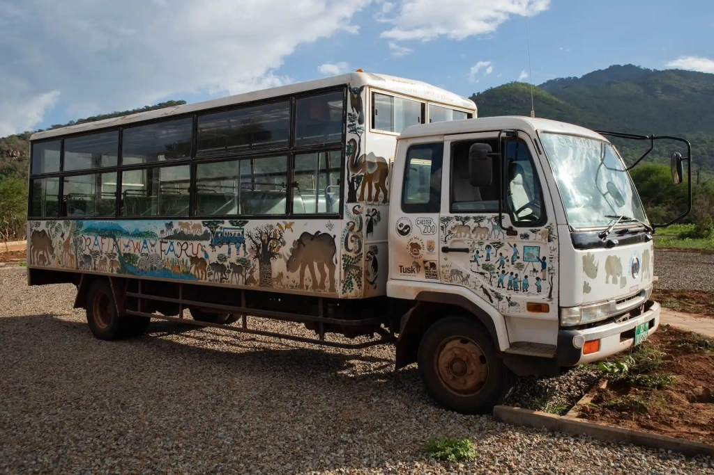
For his conservation work, Tony Fitzjohn received several awards. The most prestigious among them is the Order of the British Empire. But perhaps the main reward is the success in breeding African wild dogs and rhinos. The former are bred and released into other national parks, such as the Serengeti. The latter remain in Mkomazi under the round-the-clock protection of rangers.
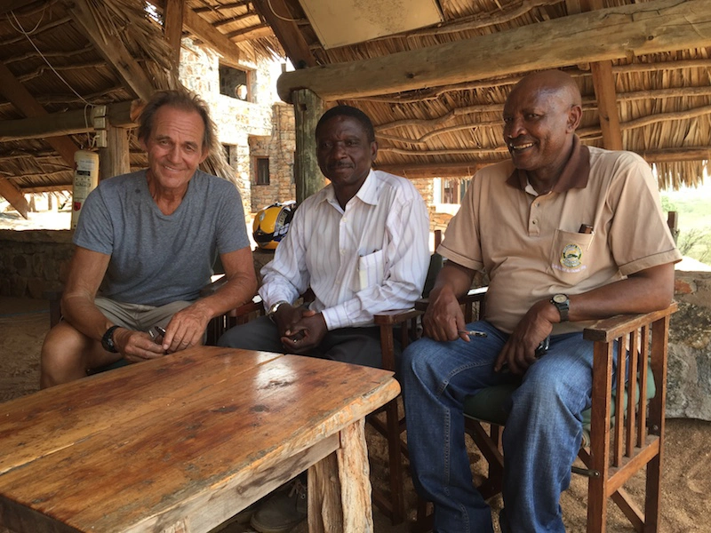
In 2020, Tony Fitzjohn and the George Adamson Trust fully handed over the successful sanctuary to the Tanzanian National Parks Authority. Tony himself returned to Kenya to restore his mentor's camp, which had been destroyed. He soon died at the age of 76. But his work lives on.
The nonprofit organization WildlifeNOW represents the unified Tony Fitzjohn George Adamson Wildlife Preservation Trust. After the founders' deaths, it continues to work in Kora National Park (Kenya) and Mkomazi National Park (Tanzania). You can join the charitable support of the Trust by allocating funds for its work without specifying or targeting any of the four Trust projects. It works in the areas that most interested its founders: preserving the black rhino population, breeding African wild dogs, helping lions and leopards, and working to reintroduce elephants to Mkomazi.
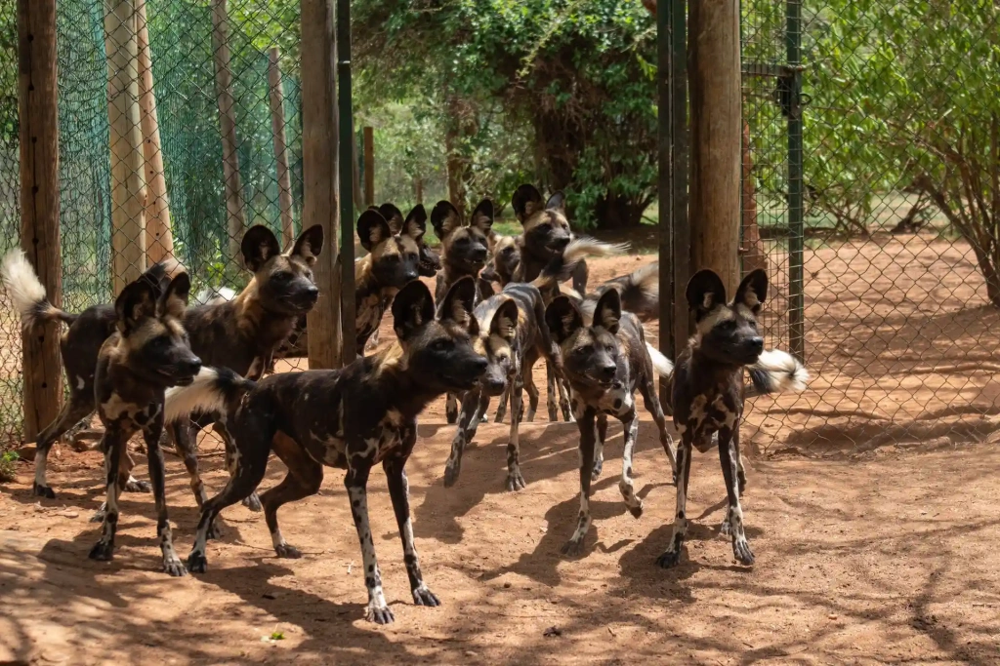
There are now over 40 black rhinos in Mkomazi. In total, there are about 200 rhinos in Tanzania now, which can be considered a small but significant success.
Why visit Mkomazi National Park and Rhino Sanctuary?
Mkomazi is one of the best places in Tanzania where you are guaranteed to see rhinos. Additionally, the park is home to several hundred elephants, giraffes, numerous types of antelopes, and other animals. There are about 80 species in total. Incidentally, this is a rare place where you can closely observe the beautiful African wild dogs, whose fur is colored in three shades. Besides, you can observe over 400 species of birds in Mkomazi. Read more about the birds of Mkomazi in our blog.
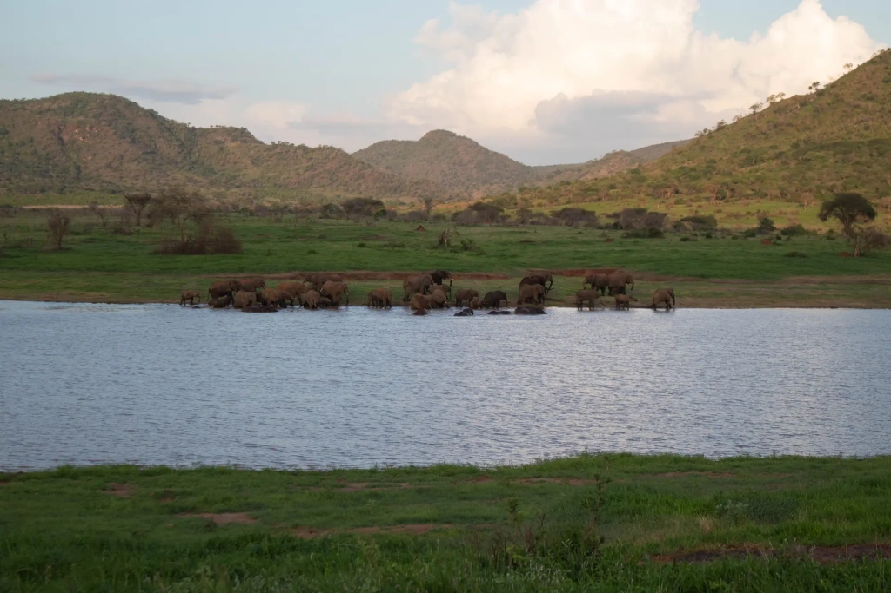
We recommend visiting parks and reserves like this one, which are less crowded. You may not see as many animals here as in the Serengeti and Tarangire, but you will avoid the throngs of visitors, the numerous vehicles on the routes, and the high hotel prices. The landscapes in Mkomazi are breathtaking — the park is framed by the Pare and Usambara mountains, offering a diverse terrain, unlike the expansive plains of the Serengeti. By visiting Mkomazi, you contribute to the growth of conservation projects in East Africa and directly support the efforts to protect black rhinos—the rarest of the large African animals.
Angelino Adventures has committed to allocating funds for the upkeep of a rhino in Mkomazi—$1,000 per year. This amount is not large, so we plan to expand our support. The money goes to the salaries of sanctuary rangers and other national park staff, as well as to vehicle operations and fuel. These are the most significant expenses for national parks. Constant patrolling is needed to prevent poachers' actions. This is especially relevant for Mkomazi, where rare and highly valued on the black market rhinos live in safety.
Frequently Asked Questions about black rhinos
Why is the black rhino going extinct?
Extensive poaching has left the black rhino on the brink of extinction. However, recent conservation efforts have made it possible to start gradually increasing the numbers of those magnificent animals. Yet, much work must be done to ensure their future.
How many black rhinos are left?
It is estimated that over 6000 black rhinos are left across Africa.
Why is a black rhino called a black rhino?
Most likely, it was named this way to differentiate these animals from the white rhino. Another theory suggests that this name could originate from the local black soil that the rhinos coat their skin with after wallowing.
Are there rhinos in the Serengeti?
Yes! There is a rhino sanctuary in Moru Kopjes, located within the Serengeti National Park. It is the second most significant black rhino habitat in the country.
Where can you see rhinos in Tanzania?
Mkomazi National Park is one of the best places to do it, as we described above. You might also spot them in Ngorongoro, within the ancient crater volcanic caldera. For those traveling to the southern part of Tanzania, we recommend Nyerere National Park, where these magnificent animals can also be seen. Serengeti National Park also offers such an opportunity and has a dedicated rhino sanctuary.
All content on Angelino Adventures is created with expert insights and thorough research, in line with our Editorial Policy.


Want to know more about Tanzania adventures?
Get in touch with our team! We've explored all the top destinations across Tanzania. Our Kilimanjaro-based adventure consultants are ready to share tips and help you plan your unforgettable journey.
 Tanzania Safaris
Tanzania Safaris
 Kilimanjaro and other mountains
Kilimanjaro and other mountains
 About Tanzania
About Tanzania
 Tanzania Islands
Tanzania Islands